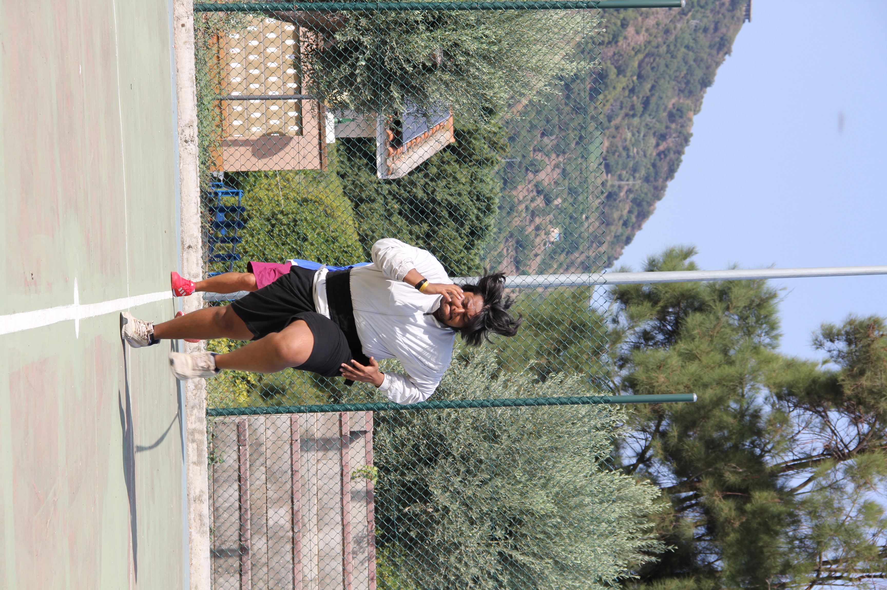

Preparatore Atletico
Preparazione Fisica & Footwork Specialist

Qualifica e Ruolo
Preparatore Atletico Certificato[cite: 1].
Programma di Allenamento
Curatore del condizionamento atletico, lavoro di footwork e potenziamento esplosivo. Segue sia i pre-agonisti che la prima squadra per garantire la massima prestazione fisica sul campo di gara[cite: 1].